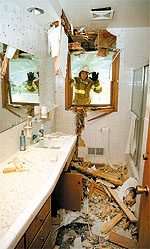
Those first two pictures are from post bulletin photographers. so I am giving Post bulletin credit for the first two pictures.
All other pictures below was taken by me.
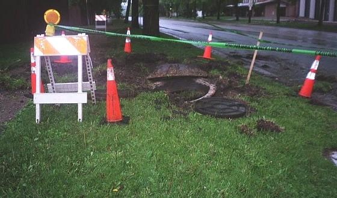
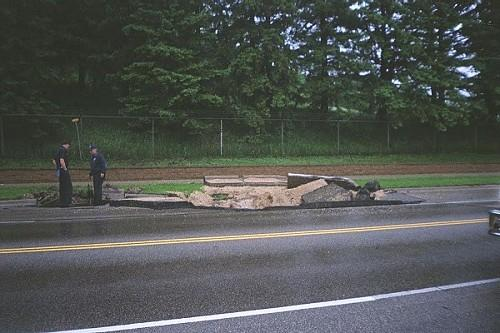
I felt a very strong shock. I thought a lightning had hit very hard. I heard from a friend that the lightning had blew up few holes in the street next to us. We walked over there and saw them. It was very big. I found alot of fat worms all over sidewalk and street.
next day, they found gas leaking some where. It was blocked off for awhile. it was obviously from a gas station.
It had gotten better lately, the 11th street reopen to only one lanes of traffic.
Contruction pictures
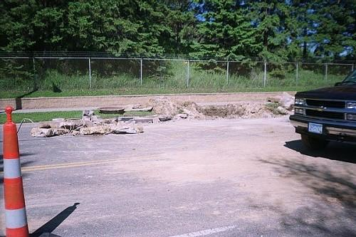
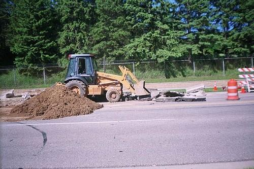
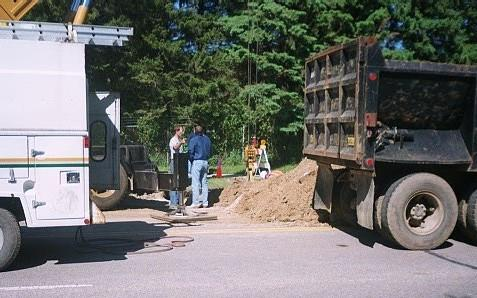
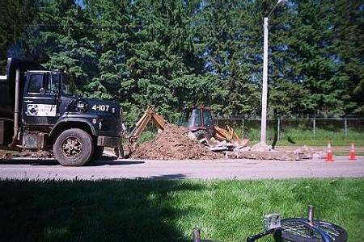
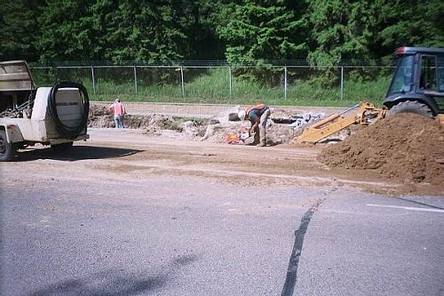
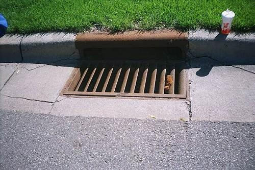
My bike and MISC stuff
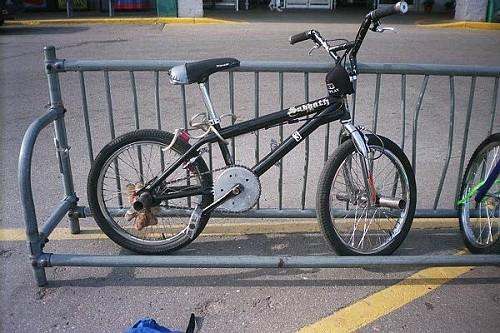
you better lock your bike when you go in store.

oldest BMXer I ever seen
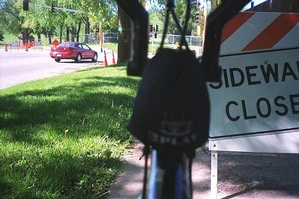
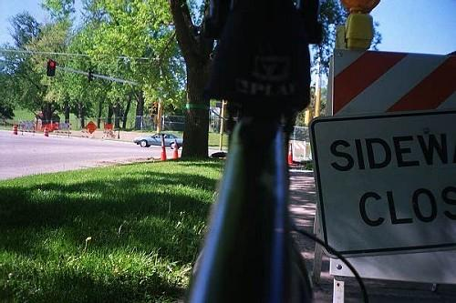
Aug 10 2011 UPDATE: I found those old page and images after I read the lightning stuff story in some FB group.
Today is Aug 10 2011 and I drove on same street and I saw those "scars" in the street. You can still see the "scars" / patches
where they fixed the holes today. I still remeber the night that my house shook badly and I went outside and saw the big holes
and worms all over.... crazy and scary night.